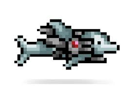

mage
As a mage you will mostly use wonds and books. Each one takes somthing called mana. mana will atamaicly recharge over time.

As a ranger you will mostly use bows and guns. when using bows you will need arrows. when you shoot a bow you will lose one arrow each time. when using a gun you will need bulleits. bulleits are like arrows where you lose one each time you shoot
As a melee you will use sowerds. Melee is the strongist class. It has the most deffence out of all the classes and it can do some of the most damige. After a littel you will begin to shoot pogectiles from you sowerds
As a mage you will mostly use wonds and books. Each one takes somthing called mana. mana will atamaicly recharge over time.
As a summoner you will us summons and whips. summons will spowne team maits who will fight for you. whipes will make all you summons targit who you hit.